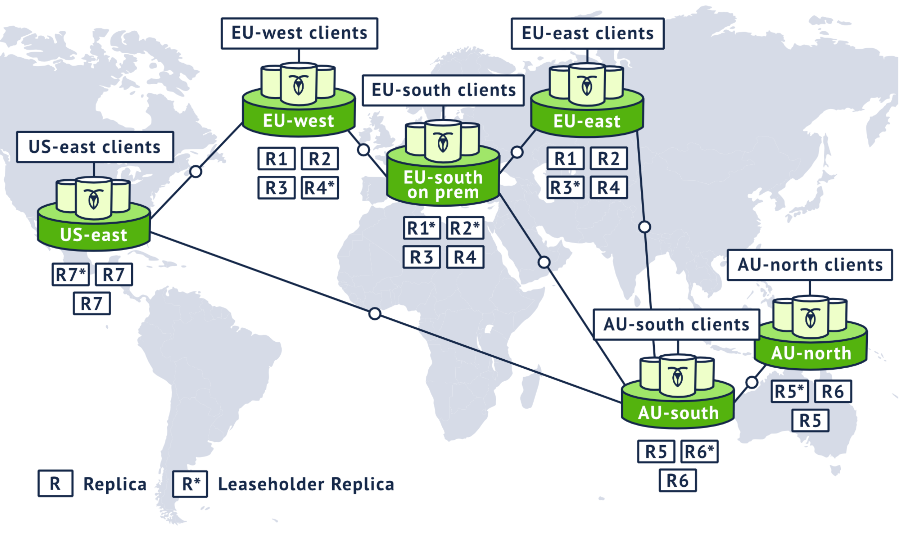
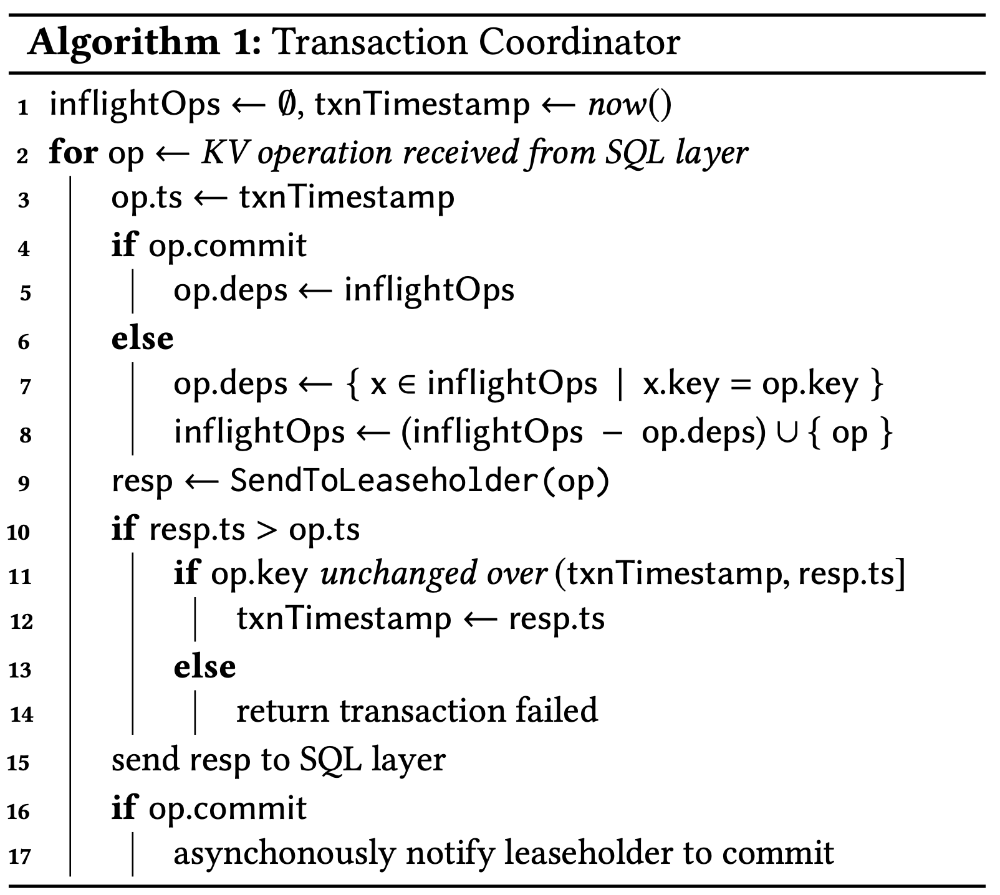
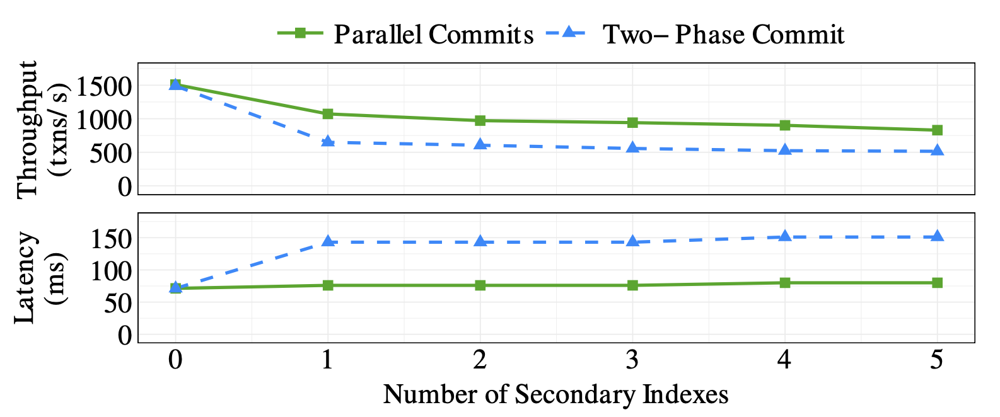
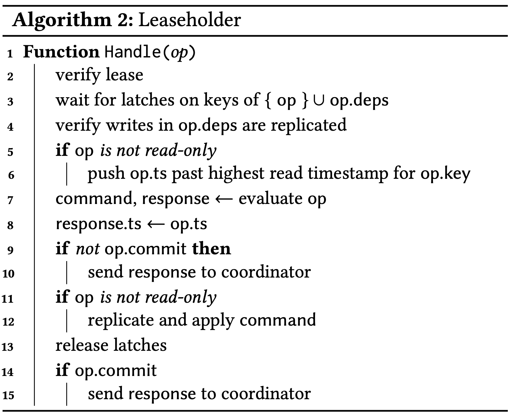
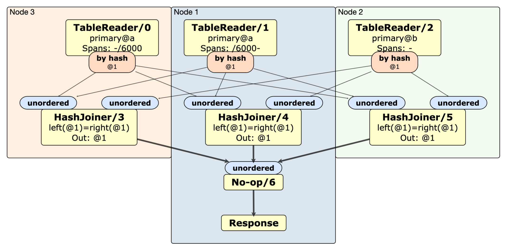
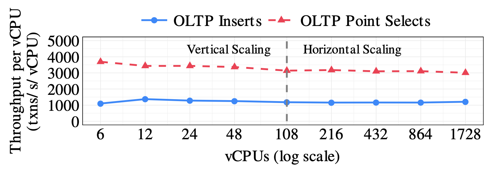
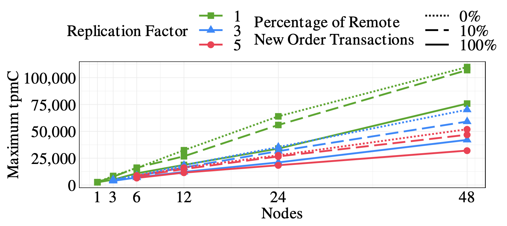
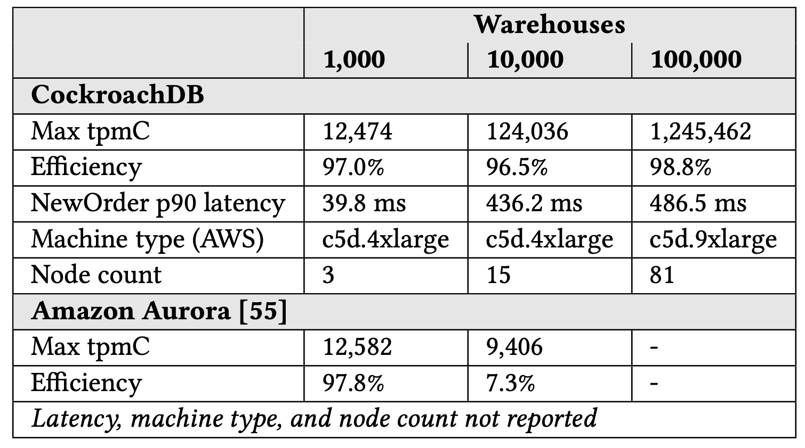
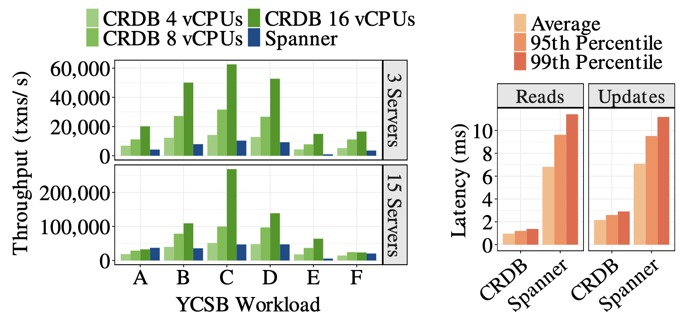

CockroachDB：弹性地理分布SQL数据库
摘要
我们生活在一个日益互联的世界中，许多组织机构跨国家甚至跨洲运作。为了服务于全球用户，组织机构正在用能够将OLTP负载扩展到数百万用户的基于云的系统中，以替换其传统DBMS。
CockroachDB是可扩展的SQL数据库系统，其从头开始构建，以支持这些全球的OLTP工作负载，同时保持高可用性和强一致性。就像它的名字一样，CockroachDB通过复制和自动恢复机制来抵御灾难。
本文介绍了CockroachDB的设计及其新颖的事务模型，该模型支持通用硬件上实现了一致的地理分布事务。我们将介绍CockroachDB如何复制和分布数据以实现容错和高性能，以及其分布式SQL层如何根据数据库集群的大小自动扩展，同时提供用户期望的标准SQL接口。最后，我们提供了全面的性能评估，并分享了一些CockroachDB用户的案例研究。最后，我们将描述在过去五年中构建CockroachDB时吸取的教训。
1 介绍
现代事务处理工作负载越来越基于地理地区分布。全球公司不仅希望构建可扩展的应用程序，而且希望出于性能和法规的原因而将数据的驻留位置以更细粒度进行控制，这些需求推动了这一趋势不断向前发展。
例如，假设一家大型公司在欧洲和澳大利亚拥有核心用户群，而在美国则拥有快速增长的用户群。为了在降低运营成本的同时为其全球平台提供支持，该公司已做出战略决策，决定迁移到基于云的数据库管理系统（DBMS）。它具有以下要求：为了符合欧盟的通用数据保护条例（GDPR），其欧洲用户的个人数据必须在欧盟内部注册。为了避免由于跨洲通信而导致的高延迟，数据应位于最常访问数据的用户附近，并且在数据传输时遵循它们（在法规限制内）。用户期望“始终在线”的体验，因此DBMS必须具有容错能力，即使整个地区故障也能够继续提供服务。最后，为了避免数据异常并简化应用程序开发，DBMS必须通过可串行化的事务来支持SQL。

CockroachDB（简称CRDB）是一种商业DBMS，旨在支持所有上述要求。 举例来说，上述公司是将其全球平台迁移到CRDB的真实组织机构，图1显示了部署CRDB的战略构想。 在本文中，我们介绍了CRDB的设计和实现，并详细说明了我们做出决策的理由以及在此过程中获得的一些经验教训。 通过重点介绍以下功能，我们将说明CRDB如何满足上述全球公司的要求：
- 容错和高可用性：为了提供容错能力，CRDB在不同地理地区的数据库中为每个分区至少维护三个副本。每当节点发生故障时，它通过自动恢复机制保持高可用性。
- 地理分布分区和副本放置：CRDB是水平可伸缩的，在添加节点时自动增加容量并迁移数据。默认情况下，它使用一组启发式方法进行数据放置（请参阅第2.2.3节），但它还允许用户以精细的粒度控制如何在节点之间划分数据以及副本应位于的位置。我们将描述用户如何使用此功能进行性能优化或作为数据驻留策略的一部分。
- 高性能事务： CRDB新颖的事务协议支持跨多个分区的高性能地理分布事务。它不使用专门的硬件即可提供可串行化的隔离。像NTP这样的标准时钟同步机制就足够了。CRDB可以在现成的服务器（包括公共云和私有云的服务器）上运行。
CRDB是旨在“make data easy”的生产级系统，因此，除了上述内容之外，CRDB还通过最新的查询优化器和分布式SQL执行引擎来支持SQL标准。它还包括用户将CRDB用于生产环境作为存储记录系统所必需的所有功能，包括在线模式变更、备份和恢复、快速导入、JSON支持以及与外部分析系统的集成。
可以在GitHub[12]上获得CRDB的所有源代码。数据库的核心功能受业务源许可证（BSL）的约束，三年后可转换为完全开源的Apache 2.0许可证[13]。另外，CRDB是“云中立”的，这意味着单个CRDB集群可以跨越任意数量的不同公共和私有云。这两个功能使用户能够避免供应商锁定的风险，例如依赖于SQL的专有扩展[6，23]或云提供商的业务中断[70]。
本文的其余部分组织如下：在第2节中，我们概述了CRDB数据库如何通过复制和基于策略的数据放置来提供容错能力和高可用性。第3部分深入研究了CRDB的事务模型。第4节说明了如何使用时间戳顺序来实现强一致性，即使在通用硬件时钟松散同步的情况下也是如此。第5节介绍了SQL数据模型、执行计划、执行引擎和模式变更。第6节评估CRDB的性能，并包含两个CRDB使用情况的案例研究。第7节总结了我们在构建CRDB时获得的经验教训。第8节介绍了相关工作，第9节给出结论和未来的工作。
2 系统架构
这一部分从第2.1节CRDB的体系结构概述开始。第2.2节和第2.3节介绍了如何通过复制和分布数据来提供系统的容错能力，高可用性和地理分布分区。
2.1 CockroachDB的体系结构
CRDB使用标准的无共享[62]架构，所有节点都用于数据存储和计算。CRDB集群由任意数量的节点组成，这些节点可以位于同一数据中心或分布在全球范围的多个数据中心中。客户端可以连接到群集中的任何节点。
在单个节点内，CRDB具有分层体系结构。现在，我们介绍每个层，包括整个白皮书中使用的概念和术语。
2.1.1 SQL层
SQL层是最上层，它是所有用户与数据库交互的接口。包括解析器、优化器和SQL执行引擎，这些模块将SQL语句转换为对KV存储的读写请求。
通常，SQL层不知道如何对数据进行分区或分布，因为下面的层将数据抽象为一个整体的KV映射表。第5节将描述某些查询如何分解这种抽象，这样可以提高分布式SQL计算的效率。
2.1.2 事务KV层
来自SQL层的请求传到事务KV层，以确保跨越多个KV对的变更的原子性。它还主要负责CRDB的隔离性保证。如何保证原子性和隔离性将在第3节和第4节中详细介绍。
2.1.3 分布层
该层表示成按key排序的逻辑上是一个整体key空间的抽象。所有数据均可在此key空间内寻址，无论是系统数据（用于内部数据结构和元数据）还是用户数据（SQL表和索引）。
CRDB在键上使用范围分区将数据划分为大小约为64MiB的连续有序块，这些块在整个集群中存储。我们称这些块为“范围”（Range）。
Range之间的顺序在一组系统Range内的两级索引结构中维护，这些Range被缓存用于快速键查找。分布层负责确定哪些范围应处理每个查询的哪个子集，并相应地路由这些子集。
范围大小~64MiB，因为它的大小足够小，使得范围可以在节点之间快速移动，但又足够大，可以存储可能同时访问的一组连续数据。范围开始为空，慢慢增大，当它们太大时会进行拆分，当它们太小时会进行合并。范围还会根据业务负载进行划分，以减少热点和避免CPU使用的不均衡。
2.1.4 复制层
默认情况下，每个范围是三个副本，每个副本存储在不同的节点上。在第2.2节中，我们描述了复制层如何使用基于共识的复制来确保修改的持久性。
2.1.5 存储层
这是最下层，本地磁盘支持的KV存储。支持高效的写入和范围扫描，以实现高性能的SQL执行。在撰写本文时，我们依赖RocksDB [54]，在其它地方有对其很好的文档描述，在整篇文章中，我们都将其视为黑匣子。
2.2 容错和高可用性
CRDB通过数据复制（第2.2.1节），在发生故障时的自动恢复机制（第2.2.2节）以及数据放置策略（第2.2.3节）来保证容错能力和高可用性。
2.2.1 使用Raft进行复制
CRDB使用Raft共识算法[46]进行一致的复制。 范围的副本形成一个Raft组，其中每个副本都是协调所有对Raft组的写入的长期领导者，或者是跟随者。 CRDB中复制的单位是命令，它表示要对存储引擎进行的一系列底层修改。 Raft维护范围的副本之间更新的一致，日志的有序性，并且当Raft声明将它们已经提交到范围的日志时，每个副本分别将命令应用于存储引擎。
CRDB使用基于范围的租约，其中Raft组（通常是Raft组的领导者）中的单个副本充当租约保持者。它是唯一可以提供最新信息读取或发起提议给Raft组领导者的副本。由于所有写入均通过租约保持者进行，因此读取可以绕过Raft所需的网络往返，而不会牺牲一致性。用户范围的租约与租约保持者所在的节点的活动密切相关；为了表示活动状态，节点每隔4.5秒在系统范围内发送一套特殊记录的心跳消息。系统范围使用基于超时租约，该租约必须每9秒更新一次。如果副本检测到租约保持者不存在，它将尝试获取租约。
为了确保一次只保留一个副本，在Raft上附带租约回收；尝试获取租约的副本通过提交特殊的租约获取日志来这样做。为了避免两个副本获取时间上重叠的租约，租约获取请求应包括在请求时被认为有效的租约副本。正如我们将在第4节中讨论的那样，确保CRDB的隔离保证至关重要。
2.2.2 成员变更和自动负载（重新）平衡
可以将节点添加到正在运行的CRDB群集中或从集群中删除节点，这些节点可能会暂时甚至永久失效。 CRDB对待所有这些情况的处理方式相似：它们都导致负载在新的和/或剩余的活动节点之间重新分布。
对于短暂的故障，只要大多数副本仍然可用，CRDB将使用Raft无缝运行。如果领导者失败，则Raft确保为Raft组选举新的领导者，以便事务能够继续进行。受影响的副本可以在重新联机后重新加入其组，并且对端节点可以通过以下方式帮助他们追赶上丢失的更新：（1）发送完整范围数据的快照，或者（2）发送一组要应用的缺失Raft日志条目。根据副本不可用时发生的写入次数确定使用的方法。
对于长期故障，CRDB会自动创建不满足复制因子范围的新副本（使用不受影响的副本作为源），并按照下一节中的说明确定放置位置。所需的节点活动数据和群集指标使用点对点的Gossip协议在整个群集中传播。
2.2.3 副本位置
CRDB具有手动和自动机制来控制副本的放置。
为了手动控制放置策略，用户可以使用一组属性在CRDB中配置各个节点。这些属性可以指定节点功能（例如专用硬件，RAM，磁盘类型等）和/或节点位置（例如国家、地区、可用区等）。在数据库中创建表时，用户可以指定放置约束和首选项作为表模式的一部分。例如，用户可以在表中包括“地区”列，该列可用于定义表的分区并将分区映射到特定的地理地区。
副本放置的另一种机制是自动的：CRDB将副本分布在各个故障域中（同时遵守指定的约束和首选项），以容忍各种严重程度的故障模式（磁盘，机架，数据中心或地区故障）。 CRDB还使用各种启发式方法来平衡负载和磁盘利用率。
2.3 数据放置策略
CRDB的副本和租约持有者放置机制允许各种可能的数据放置策略，这些策略允许用户遵守数据注册要求，并在性能和容错能力之间进行权衡。下面列出了我们支持的一些多地区模式。
-
按地理位置分区的副本：对于具有地理访问位置的数据，可以按访问位置对表进行分区，并将每个分区（范围集）固定到特定地区。这样可以快速进行地区内读取和地区内写入，以及保证AZ故障时的可用性。地区范围内的故障会导致本地地区的数据不可用。此策略还可用于强制执行数据驻留要求。
-
按地理位置分区的租约保持者：可以将按地理分区表中分区的租约保持者固定到访问地区，而其余副本固定到其余地区。此策略可实现快速的地区内读取和地区故障的幸存，但代价是跨地区写入速度较慢。
- 重复的索引：像CRDB中的所有其他数据一样，索引存储在可以固定到特定地区的范围中。通过在表上复制索引并将每个索引的租约保持者固定到特定地区，该数据库可以提供快速的本地读取功能，同时保证抵抗地区故障的能力。这会带来较高的写入放大率和较慢的跨地区写入，但对于不经常更新或无法绑定到特定地理位置的数据很有用。
3 事务
CRDB事务可以跨越整个键空间，在提供ACID保证的同时，可以访问跨越整个分布式集群中的数据。CRDB使用了MVCC的变体来支持串行化隔离级别。
我们从3.1节开始介绍事务模型概览，3.2节描述如何保证事务的原子性。在3.3节和3.4节，描述了保证串行化隔离的并发控制机制。最后，在3.5节介绍跟随者副本如何提供一致性历史读。
3.1 概览
SQL事务从SQL连接的节点入口开始。这个节点交互式地从客户端接受SQL消息和返回应答，扮演着事务协调者的角色（编排和最终提交或者终止关联事务）。应用程序通常会连接到距离其地理位置最近的节点来优化延迟。下面的小结中，我们描述协调者算法。
3.1.1 事务协调者的执行
算法1给出了以协调者视角的事务处理高层步骤。在事务的执行过程中，协调者接受一系列来自SQL层的KV操作(第2行)。

SQL需要在下一个操作发出前，对当前操作进行应答。为了避免在复制操作时事务的停顿，协调者采用了两个重要的优化方法：写流水线和并行提交。写流水线不需要等待对当前操作复制就可以返回结果，并行提交使得提交操作和写流水线复制并行进行。组合起来，使得许多多语句SQL事务仅需一轮复制延迟就可以完成。
为了实现前面提到的优化，协调者会跟踪还没有完全复制完成的操作(第一行)。还维护了事务时间戳，初始化为当前时间，但是可能会随着事务进行而增加。由于CRDB使用了MVCC，时间戳选择事务执行读取和写入的点（在此之后，其他事务可见）。
写流水线：每个操作都包括必须读取或更新的键，以及指示事务是否应使用当前操作提交的元数据。 如果某项操作未尝试提交（第6行），并且该操作与任何先前的操作（第7行）没有重叠，则可以立即执行该操作。 这样，可以“流水线化”对不同键的多个操作。 如果操作依赖于较早的运行中的操作，则执行必须等待较早的操作被复制； 这样的依赖会引入“管道停顿”。 流水线逻辑在算法2（下面讨论）中进行了概述，但依赖于此处计算的依赖关系。 此外，协调者以状态运行中对当前操作跟踪（第8行）。
接下来，协调者将操作发送给租约持有者以执行并等待响应（第9行）。 响应中可能包含更大的时间戳（第10行），这表明读取了另一笔事务，迫使租约持有者调整操作时间戳。 然后，协调者尝试调整事务时间戳以使其匹配。 这是通过验证（通过一轮RPC）来实现的，即在新的时间戳上重复事务中的先前读取将返回相同的值（第11行和第12行）。 如果不是，事务将失败（第13和14行），可能必须重试。 该机制将在3.4节中详细介绍。
并行提交：现在思考一下，当事务提交时会发生什么？简单地可以认为一旦所有写入都已经被复制后就可以提交，需要至少两轮连续的共识周期。取而代之的是，并行提交协议使用暂存事务状态，使事务的真实状态取决于其所有写操作是否已被复制。这避免了额外的共识，因为协调者可以在启动暂存状态复制的同时验证未完成的写入（也需要被复制）（第5行）。假设两者都成功，则协调者可以立即确认事务已经提交（第15行）。在终止前，协调者将事务状态异步记录为已显式提交（第16和17行）。这样做是为了性能考虑，并在第3.2节中进行了讨论，我们还解释了在协调者过早崩溃后如何解决暂存记录。
我们使用TLA+[36，38]正式验证了并行提交的安全性。具体来说，我们通过断言每个暂存事务最终都被明确地提交或中止而验证了原子性，而不管协调者是否失败，并没有告知客户端其他情况。我们还通过断言已提交事务保持提交状态来验证持久性。验证代码可在GitHub[14]上获得。
为了从经验上证明并行提交的好处，我们在分布于三个地区的三台服务器上运行了微基准测试。负载包括对表的单行写入，该表具有十列，并且在这些列上具有可变数量的二级索引。图2显示，对于这种负载，当表具有一个或多个二级索引时，并行提交可将吞吐量提高多达72％，并将p50延迟减少多达47％，因为索引更新需要多范围事务。这表明，即使事务需要跨范围的协调，它们的延迟仍保持不变。

3.1.2 租约持有者的执行
当租约持有者接受到协调者的操作请求时（算法2），首先检查其租约的有效性（第2行）。然后获得对操作和所有依赖的所有键的锁（第3行），所以支持并发重叠请求的互斥。接下来，校验所有依赖操作已经成功（第4行）。如果执行写入，保证操作的时间戳在任何冲突读之后，如果有必要则增加（第5和6行），以免使那些事务无效。

初步检查完成后，租约持有者将评估操作，以确定在存储引擎中需要进行哪些数据修改，而无需实际进行变更（第7行）。这导致详细说明必需的变更以及对客户端的响应（例如，在写入情况下为成功，在读取情况下为值）的低级命令。如果此操作不是提交事务，则租约持有者可以响应协调者而无需等待复制（第9行和第10行）。写操作随后会被复制。达成共识后，每个副本将命令应用到其本地存储引擎（第11和12行）。最后，租约持有者释放其锁，如果还未给协调者响应，则给协调者发送应答消息（第13至15行）。
请注意，算法2并未深入研究在评估阶段（第7行）可能出现的各种情况。在这段时间里，某个事务可能会遇到来自其他事务的未提交的写操作，或者该写操作与该事务的读取时间戳非常接近，以致无法确定正确的事务顺序。下一节将讨论这些方案，以及CRDB如何保证原子性和可串行化隔离。
3.2 原子提交
通过考察所有事务的临时写入（直到事务提交时间）来实现原子提交。CRDB将这些临时值叫做写入意图（write intents）。一个写入意图是一个常规的MVCC KV对，它的前面的元数据指示其是一个意图。该元数据指向事务记录（transaction record），事务记录是一个特殊的键（每个事务唯一）保存了事务当前的处理状态：未决、暂存、提交或终止。事务记录用于一次原子变更所有意图的可见性处理，并持久化保存到与事务的第一次写入相同的范围中（有关协议的详细信息，参看3.1节）。对于长时间运行的事务，协调者周期性发送心跳给未决状态的事务记录，确保竞争事务仍在进行。
遇到写入意图，读取器会读取意图的事务记录。如果记录指示事务已经提交，则读取器会将意图视为常规的值（并执行清除操作将其删除）。如果发现事务是未决的（指示事务还在进行中），则读取会阻塞，等待其完成。如果协调者节点故障，则竞争事务最终将检测到事务记录过期，然后标记为中止。如果事务在暂存状态（表明事务已经被提交或者中止，但是读取器还不确定到底是哪个），则读取器将通过阻止复制写入之一尝试中止该事务。如果所有写操作都已被复制，则实际上已提交，并对其进行更新。
3.3 并发控制
正如3.1节中的讨论，CRDB是一个MVCC系统，每个事务以自己的提交时间戳执行读取和写入。在系统中，这就实现了所有事务的全排序，表示为可串行化执行。
但是，事务之间的冲突可能需要调整时间戳。我们在下面描述发生的情况，注意每当提交时间戳发生变更时，事务通常会尝试证明其前面的读取在新的时间戳上仍然有效（第3.4节），在这种情况下，它可以简单地以更新的时间戳继续进行。
3.3.1 写读冲突
在读取运行时遇到未提交的意图，并且时间戳较小，则等待事务结束。等待是使用内存队列结构来实现的。读取遇到时间戳较大的未提交意图，则忽略，并且不需要等待。
3.3.2 读写冲突
以时间戳ta写一个键时，如果对这个键有更高的时间戳tb的读取操作（tb >= ta），则无法直接写入。CRDB强制将写入事务的提交时间戳增加到tb以后。
3.3.3 写写冲突
写入如果遇到具有较小时间戳的未提交意图，将等待较早的事务完成（类似于写入-读取冲突）。 如果它在较大的时间戳上遇到已经提交的值，则会将其时间戳提前到该时间戳（类似于读写冲突）。 在不同事务以不同顺序写入意图的情况下，写写冲突也可能导致死锁。 CRDB采用分布式死锁检测算法来中止循环等待中的一个事务。
3.4 读取新值
上述某些类型的冲突需要将事务的提交时间戳推进。为了保持可串行化，必须将读取时间戳推进以匹配提交时间戳。
如果我们可以证明事务在ta读取的数据在 (ta, tb] 时间间隔内没有更新，则可以将事务的读取时间戳从ta推进到tb > ta。如果发生了数据变更，事务必须被重启。如果事务的结果尚未发送给客户端，则CRDB将在内部重试事务1；如果结果已发送，则通知客户端丢弃它们并重新启动事务。
为了确定读取时间戳是否可以推进，CRDB会在事务的读取集中维护键的集合（取决于内存预算）。发出一个“读取新值”的请求来确认键在给定的时间戳间隔内没有被更新（算法1，第11至14行）。这涉及重新扫描读取集并检查是否有任何MVCC值落在给定的时间间隔内。此过程等效于PostgreSQL检测为实现SSI而跟踪的读写-反向依赖 [8，49]。与PostgreSQL类似，我们的实现可能允许误报（在非严格必要时强制事务中止），以避免维护完整依赖图的开销。
当扫描遇到不确定的值时，也需要推进事务的读取时间戳记：该值的时间戳使得其不清楚是属于读取器的过去还是将来（请参阅第4.2节）。在这种情况下，我们还尝试执行刷新。假设成功，则现在将通过读取返回该值。
3.5 跟随者读取
CRDB允许非租约持有副本通过特殊的 "AS OF SYSTEM TIME" 查询修饰符为带有时间戳的只读查询提供服务。为了安全地启用此功能，要求在给定时间戳T上执行读取操作的非租约持有副本需要知道，将来没有任何写入操作可使得读取操作追溯无效。它还需要确保它具有服务读取所需的所有数据。这些条件意味着，如果要提供跟随者在时间戳T上读取的内容，则租约持有者必须不再接受时间戳T'≤T的写操作，并且跟随者必须追上影响到MVCC快照的Raft日志的前缀日志。
为此，每个租约持有者跟踪所有传入请求的时间戳，并定期发出关闭时间戳，在该时间戳以前，将不接受进一步的写操作。关闭时间戳与当时的Raft日志索引一起在副本之间定期交换。跟随者副本使用从收到的更新建立的状态来确定它们是否具有在给定时间戳下提供一致读取所需的所有数据。出于效率原因，在节点级别（而不是范围级别）生成关闭时间戳和相应的日志索引。
每个节点都会记录其与系统中所有其他节点的延迟。当集群中的某个节点在足够旧的时间戳上接收到读取请求时（关闭的时间戳通常会将当前时间拖后约2秒），它将请求转发给具有数据副本的最近节点。
4 时钟同步
CRDB不依赖专用硬件来进行时钟同步，因此它可以通过软件时钟同步服务（例如NTP或Amazon Time Sync Service）在公有云和私有云中的服务器上运行。
在本节中，我们介绍CRDB用于讨论时间戳排序的混合逻辑时钟方案（第4.1节）。然后，我们讨论该时钟方案如何允许松散同步的时钟有效地提供事务之间的单键线性化（第4.2节）。最后，我们探讨了违反可配置时钟同步界限时CRDB的行为（第4.3节）。
4.1 混合逻辑时钟
CRDB群集中的每个节点都维护一个混合逻辑时钟（HLC）[20]，该时钟提供物理时间和逻辑时间组合的时间戳。物理时间基于节点的粗同步系统时钟，逻辑时间基于Lamport的时钟[37]。
CRDB部署中的HLC在其物理时间组件与群集中其他HLC的物理时间组件之间配置了最大允许的偏移量。此偏移配置默认为500ms的保守值。混合逻辑时钟提供了一些重要的属性：
-
HLC在每次节点间交换时通过其逻辑组件提供因果跟踪。节点将HLC时间戳附加到它们发送的每个消息中，并使用它们接收的每个消息中的HLC时间戳来更新本地时钟。 捕获不同节点上事件之间的因果关系对于在CRDB中不变式至关重要。其中最重要的是类似于Spanner的租约不相交不变性：对于每个范围，每个租约间隔都与其他每个租约间隔不相交。这在通过HLC进行因果关系转移的合作式租约移交上强制执行，并通过等于租约间隔之间最大时钟偏移的延迟在非合作式租约获取中强制执行。
-
HLC在单个节点上的重启内和重启之间提供严格的单调性。在连续处理中，提供此属性很简单。在重启过程中，通过在启动任何服务之前等待进程启动时的最大时钟偏移来强制实现此属性。 严格单调的时间戳分配可确保为源自同一节点的两个因果相关的事务分配时间戳，以实时反映其顺序。
-
在存在孤立的瞬态时钟偏斜波动的情况下，HLC提供自我稳定功能。如上所述，节点在收到网络消息后转发其HLC。这样的效果是，在足够的集群内通信的情况下，即使它们各自的物理时钟发散，跨节点的HLC也会趋于收敛和稳定。这没有提供有力的保证，但实际上可以掩盖时钟同步错误。
4.2 不确定间隔
我们已经讨论了CRDB中的事务模型如何在事务之间提供可串行化的隔离。但是，可串行化本身并不能说明系统中的事务排序与实时排序之间的关系。为此，我们必须谈论CRDB提供的一致性级别。
在正常情况下，CRDB满足读取和写入的单键线性化。这意味着对给定键的每个操作似乎都是原子发生的，并且一些全线性顺序与这些操作的实时顺序一致。在单键线性化下，过时的读取异常是不可能的。即使对于松散同步的时钟，也是如此，只要这些时钟保持在彼此之间配置的最大时钟偏移之内。
请注意，CRDB不支持严格可串行化性，因为不能保证不连续键集的事务的排序将实时匹配它们的排序。实际上，对于应用程序来说这不是问题，除非客户端之间存在外部低延迟通信通道，这可能会影响DBMS上的动作。
在CRDB中，通过跟踪每个事务的不确定间隔来满足单键线性化属性，在该不确定间隔内，两个事务之间的因果顺序是不确定的。创建事务后，会从事务协调者的本地HLC中为该事务提供一个临时的提交时间戳记commit_ts，不确定性间隔为[commit_ts，commit_ts + max_offset]。
当事务在低于其临时提交时间戳的时间戳上遇到键上的值时，它会在读取过程中观察该值，并在写入过程中以较高的时间戳覆盖该值。如果事务可以访问完全同步的全局时钟，则仅此一项就可以满足单键线性化。
如果没有全局同步，则需要不确定的时间偏移，因为事务可能接收到临时提交时间戳，直到集群的最大偏移量早于导致实时执行此新事务的事务。当事务在高于其临时提交时间戳但在其不确定间隔内的时间戳处遇到键上的值时，它执行不确定重启，将其临时提交时间戳移动到高于不确定值的位置，但保持其不确定间隔的上限不变。
这相当于按照过去的记录对待事务不确定性窗口中的所有值。结果，事务对每个键执行操作的顺序与这些事务的实时顺序一致。
4.3 时钟偏斜下的行为
至此，我们仅考虑了配置的最大时钟偏移范围时CRDB的行为。当违反这些时钟偏移范围时，还应考虑系统的行为。
在单个范围内，通过Raft保持一致性。Raft没有时钟相关性，因此它为单个范围构造的变更顺序将保持线性化，而与时钟偏移无关。如果所有读写都写入Raft日志，则足以确保在任意时钟偏斜下的一致性。但是，范围的租约使得无需通过Raft即可从租约保持者处提供读取信息。这会导致复杂性，因为在较大的时钟偏斜下，多个节点可能会认为它们各自拥有给定范围的租约。如果没有额外的保护，这可能导致两个租约保持者之间的操作冲突，从而导致客户端可见的隔离异常。
CRDB采用两种保护措施来确保这种情况不会影响事务隔离。
- 范围租约包含开始和结束时间戳记。租约保持者不能为超出其租约间隔的MVCC时间戳提供读服务，也不能为超出其租约间隔的MVCC时间戳提供写服务。前面讨论的租约不相交不变性确保在范围内，每个租约间隔与其他每个租约间隔不相交。
- 每次写入范围的Raft日志时，都会包含建议使用的范围租约的序列号。成功复制后，将根据当前活动的租约检查序列号。如果它们不匹配，则写入被拒绝。由于范围的租约变更本身会写入范围的Raft日志中，因此，只有一个租约保持者能够一次对范围进行变更。即使多个节点认为它们同时拥有有效租约，也是如此。
这两个保护措施确保了同时活动的一对租约不能为违反可串行化隔离的请求提供服务。第一个保障措施确保传入租约持有者无法进行写入操作，从而使传出租约持有者提供的读操作无效。第二种保障措施是确保即将离任的租约持有者不能提供使进来的租约持有者进行的读取或写入无效的写入操作。这些保护措施共同确保即使在严重的时钟偏斜违反最大时钟偏移范围的情况下，CRDB仍可提供可串行隔离。
尽管无论时钟偏斜如何都保持隔离，但配置的时钟偏移范围之外的时钟偏斜会导致因果关系事务之间的单键线性化遭到破坏。如果事务是通过不同的网关节点发出的，则这些时钟偏差超过时钟偏移范围，则这是可能的。如果为第二个事务的网关节点分配的commit_ts大于第一个事务的时间戳以下的max_offset，则第一个事务写入的值可能会超出第二个事务的不确定性间隔。这将允许第二个事务读取与第一个事务的写集重叠的键，而无需实际观察写操作。过时的读取表示违反单键线性化，并且仅当时钟保持在偏移范围内时才被阻止。
为了减少过时读取的可能性，节点会定期测量其时钟与其他节点的偏移量。如果任何一个节点超过配置的最大偏移量，超过大多数其他节点的80％以上，它将自行停止。
5 SQL
到目前为止，我们已经讨论了事务性KV层和下面层的技术细节，但是所有与数据库的用户交互都通过SQL层进行。 CRDB支持ANSI标准SQL[51]的许多PostgreSQL方言，并带有一些扩展（例如，需要支持数据库的地理分布式性质）。
本部分介绍了SQL数据模型及其如何映射到下面的层（第5.1节），SQL计划和执行的技术细节（第5.2和5.3节）以及模式变更（第5.4节）。
5.1 SQL数据模型
每个SQL表和索引存储在一个或多个范围中，如2.1节描述。 此外，所有用户数据都存储在一个或多个有序索引中，其中一个被指定为“主”索引。 主索引在主键上，所有其他列存储在值中（如果未由模式明确指定，则自动生成主键）。 二级索引在索引键上，并存储主键列以及索引模式指定的任意数量的其他列。 CRDB还支持哈希索引，该哈希索引可通过在多个范围中分配负载来帮助消除热点。
5.2 查询优化器
SQL查询计划由Cascades风格[27]查询优化器执行，该查询优化器使用200多个转换规则来探索可能的查询执行计划的空间。
5.2.1 查询转换DSL
CRDB中的转换规则以称为Optgen的领域特定语言（DSL）编写，该语言提供了用于定义，匹配和替换查询计划树中的运算符的直观语法。 Optgen编译为Go，以便转换规则可以与其余CRDB代码库无缝集成（除存储层外，所有CRDB均在Go中实现）。
例如，考虑一个简单的Optgen规则EliminateNot：
[ EliminateNot , Normalize ]
(Not (Not $input :∗)) => $input
它匹配包含两个嵌套的NOT运算符的标量表达式，并将其替换为内NOT的输入。 关系表达式的转换规则较为复杂（例如，它们可以调用任意Go方法），但是都具有相同的结构，带有“匹配模式”和逻辑等效的“替换模式”，并用箭头隔开。
EliminateNot是规范化（重写）规则的示例，其中源表达式被转换后的表达式替换。 探索规则（例如联接重新排序和联接算法选择）保留两个表达式，以便优化器可以选择估计成本较低的任何一个。 与Cascades模型一致，CRDB的优化程序使用统一的搜索，在该搜索中交织了规范化和探索规则的应用。 生成的代码确保在应用所有适用的规范化规则之前，为操作分配最少的内存。
5.2.2 优化器是分布式的
CRDB的许多转换规则可以在其他最新的查询优化器中找到，但某些规则特定于CRDB的地理分布和分区性质。例如，优化器可以使用有关表分区的信息来推断其他过滤器并启用更具选择性的索引扫描。考虑在表t上的索引idx（region，id），该索引分为两个地区，东西两个地区。在这种情况下，查询SELECT * FROM t WHERE id = 5可以重写为SELECT * FROM t WHERE id = 5 AND（地区=“东”或地区=“西”），从而可以使用索引。这类似于Oracle的索引跳跃扫描[29]，但是过滤器是根据模式而非直方图静态确定的。
优化器还将数据分布考虑在代价模型内。对于某些负载，复制辅助索引以使每个地区都有其自己的副本可能会有所益处（请参见第2.3节中的重复索引）。优化器通过基于每个索引副本与查询的网关节点的接近程度来为每个索引副本计算代价，从而最大程度地减少跨地区数据混洗。
5.3 查询计划和执行
CRDB中的SQL查询执行以下面两种模式之一执行：（1）仅网关模式，其中查询计划生成节点负责查询的所有SQL处理，或（2）分布式模式，其它集群中其它节点参与SQL处理。在撰写本文时，只有只读查询可以在分布式模式下执行。
由于分布层提供了单个整体式键空间的抽象，因此SQL层可以对任何节点上的任何范围执行读和写操作。这样，无论是在仅网关模式下还是在分布式模式下，SQL操作员的行为都相同。
通过启发式估计将需要通过网络发送的数据量来做出分发决定。仅读取少量行的查询在仅网关模式下执行。为了在必要时生成分布式查询计划，CRDB执行了一个物理计划阶段，该阶段将查询优化器的计划转换为物理SQL运算符的有向无环图（DAG）。
物理计划将逻辑扫描操作分为多个TableReader操作符，每个节点包含一个由扫描读取的范围的操作符。分割扫描后，将剩余的逻辑运算符与TableReader安排在同一节点上，从而将筛选器，联接和聚合推到尽可能接近物理数据的位置。
图3显示了一个3节点集群上的两个表a和b的主索引之间的分布式哈希联接的示例，其中节点2保留了所请求的范围b，但是a的范围在节点1和节点三之间被划分。扫描后的数据将通过哈希混排到扫描中涉及的所有节点，并使用节点本地哈希联接运算符进行联接，然后发送回网关节点，网关节点将结果合并并返回给SQL客户端。数据库可以使用查询上的EXPLAIN（distsql）命令为任何查询生成这种图形。

5.3.1 一次一行执行引擎
CRDB的主要执行引擎基于Volcano [26]迭代器模型，并一次处理一行。 CRDB中所有受支持的SQL功能都在此执行引擎中实现，包括联接，聚合，排序，窗口函数等。
5.3.2 向量化执行引擎
CRDB可以使用受MonetDB/X100启发的向量化执行引擎来执行SQL查询的子集[7]。向量化引擎处理的是面向列的数据批次，而不是行。
如果选择了向量化引擎，则从CRDB的KV层读取时，磁盘中的数据将从行格式转换为列格式，然后在将其发送回最终用户之前再次从列格式转换为行格式。此过程的开销很小。
与一次行引擎相比，向量化引擎中实现的运算符在它们支持的所有SQL数据类型上都是单态的，从而大大减少了一次行迭代器模型固有的解释器开销。由于CRDB是用Go编写的，它不支持具有特殊功能的泛型，因此这种单态化是使用模板代码生成来完成的。
所有CRDB的向量化运算符都可以处理选择向量的存在，即紧缩打包到数据列中的索引数组，而以前的运算符尚未将其过滤掉。选择向量用于避免选择运算符之后昂贵的物理数据移除。诸如合并联接之类的复杂运算符使用单态化来生成多个内部循环，具体取决于是否存在选择向量。
上述优化使单个算子的速度提高了两个数量级，在TPC-H [69]基准测试中，查询速度提高了4倍。
5.4 模式变更
CRDB使用一种协议来执行模式变更，例如添加列或二级索引，该协议允许在模式变更期间保持表在线（即能够提供读取和写入服务），在模式变更期间，允许不同的节点在不同时间异步过渡到新表。
CRDB通过遵循将每个模式变更分解为一系列增量变更的协议来实现，F1 [52]使用的解决方案。 在此协议中，添加二级索引需要在初始和最终版本之间使用两个中间模式版本，以确保在整个群集上的写入可用于读取之前，对索引进行更新。 如果我们强制不变，即在集群中始终使用最多两个连续的模式版本，那么在整个模式变更期间，数据库将保持一致状态。
6 评估
本节评估CRDB在多个维度上的性能。 我们首先检查具有各种负载特征的CRDB的可伸缩性（第6.1节）。 接下来，我们研究了CRDB在各种灾难情况下在多地区部署中的性能（第6.2节）。 接下来，我们将CRDB与Spanner的性能进行比较（第6.3节）。 我们以CRDB使用的几个示例结束（第6.4节）。除非另有说明，否则我们在所有实验中均使用CRDB v19.2.2。
6.1 CockroachDB的可伸缩性
6.1.1 垂直和水平可伸缩性
我们通过运行Sysbench OLTP套件中的两个基准测试来评估CRDB在“令人难以置信的并行”负载上的垂直和水平可伸缩性[33]。图4显示，随着vCPU数量的增加，每个vCPU的吞吐量（用于读取和写入）几乎保持恒定。图表的左侧展示了垂直可伸缩性，实验是在具有不同AWS实例类型（c5d.large，c5d.xlarge，c5d.2xlarge，c5d.4xlarge和c5d.9xlarge以及2、4、8、16和36个vCPU）。图表的右侧展示了水平可伸缩性，实验在c5d.9xlarge实例上运行，群集大小从3个节点到48个节点不等。所有群集跨越us-east-1中的三个AZ，每个点代表三个运行中的平均值。每个实验每个节点使用4个表，每个表使用1,000,000行，因此在48个节点群集上产生约38 GB的数据。

6.1.2 跨节点协调的可伸缩性
为了评估具有不同数量的跨节点协调的CRDB的可伸缩性，我们在新订单事务中使用可变百分比的远程仓库来运行TPC-C[68]。 由于复制还会导致跨节点协调，因此我们还会变更复制因子。图5显示，在这些实验中，复制的开销可将三个副本的吞吐量最多降低48％，对于五个副本的吞吐量最多降低57％，而分布式事务可将吞吐量进一步降低最多46％。 尽管有这些开销，但所有负载都会随着群集大小的增加而线性扩展。 此实验使用n1-standard-4 GCP机器[25]（每个节点4个vCPU）。 每个点代表三次运行的平均值，其中每次运行都找到至少持续十分钟的最大tpmC。 由于TPC-C中的吞吐量随数据大小而定，因此此处显示的实验最大使用10,000个仓库，相当于800GB的数据。

6.1.3 TPC-C与Amazon Aurora的性能比较
为了演示以行业标准为基准的可扩展性，我们在CRDB v19.2.0上运行了具有1,000、10,000和100,000个仓库的TPC-C。 如表1所示，CRDB的扩展能力以接近最大的效率支持多达100,000个仓库，对应于500亿行和8 TB数据。 所有实验均符合TPC-C规范（包括等待时间和外键的使用）。

6.2 多地区可用性和性能
为了说明通过不同的数据放置策略在性能和容错能力之间做出的取舍（第2.3节），我们在AZ和地区故障时针对多地区CRDB集群测量TPC-C 1,000性能。 除了每个地区的负载生成器之外，该实验还使用了在美国三个地区部署的9台n1-standard-4 GCP机器。
图6中的虚线之间的时间段依次表示AZ故障和恢复以及地区范围的故障和恢复。 失败时，请求将路由到回退可用区（取决于策略，在同一地区还是在另一个地区）。 表和索引按仓库进行分区，以实现分区策略。 对于重复索引策略，只读项目表被复制到每个地区。

6.3 与Spanner的比较
图7将CRDB的性能与YCSB [16]基准套件2上的Cloud Spanner的性能进行了比较。 由于Spanner是一项托管服务，因此不会透露其硬件配置。 因此，我们将比较几种CRDB配置（每个节点4、8和16个vCPU）。 作为参考，三个带有本地存储的n2-standard-8 GCP VM（每个8个vCPU），是一个“节点” Spanner实例（由三个副本组成）成本的0.2％之内。 在所有测试中，副本均分布在单个地区中的三个可用区中。

6.4 使用案例研究
数千个组织使用CRDB。在本节中，我们给出了两个有关CRDB使用情况的特定案例研究。
6.4.1 电信提供商的虚拟客户支持代理
一家美国电信提供商希望通过构建虚拟代理为他们的客户提供7x24支持来降低其客户服务成本。代理依靠在会话数据库中记录客户会话元数据。该团队之所以选择CRDB，是因为它具有强大的一致性，地区容错能力以及地理分布集群的性能。
出于财务原因，该团队在自己的本地数据中心和AWS地区中部署了一个多地区CRDB集群。 CRDB对混合部署的支持使其成为可能。为了避免地区失败，他们选择了按地区划分的租约持有者策略。写入需要跨越地区边界才能达到多数派，但是读取性能将是局部的。
6.4.2 在线游戏公司的全球平台
一家每天处理3-4千万笔财务事务的在线游戏公司正在寻找其全球平台数据库。他们对数据合规性，一致性，性能和服务可用性有严格的要求。凭借其在欧洲和澳大利亚的核心用户群以及在美国的快速增长的用户群，他们寻求隔离故障域，并将用户数据固定到特定位置，以实现合规性和低延迟。
CRDB的体系结构非常适合他们的要求，现在已成为其长期路线图中的战略组成部分。图1显示了其CRDB部署的愿景。
7 经验教训
本节详细介绍了在过去五年中构建CRDB并将其增强为生产级系统的一些经验教训。
7.1 Raft实况
我们最初选择Raft作为CRDB的共识算法，因为它的易用性及其实现的精确描述[46]。在实践中，我们发现像CRDB这样的复杂系统中使用Raft有很多挑战。
7.1.1 减少抖动
Raft领导者会定期向每个跟随者发送心跳，以维持他们的领导地位。由于大型CRDB部署可能需要维护成千上万个共识组（每个范围一个），因此这种通信代价很高。为了减轻这种开销，我们对基本协议进行了两项变更：（1）将心跳消息合并到每个节点一个，以节省每个RPC开销；（2）暂停Raft组，这些组最近没有写活动。
7.1.2 联合共识
Raft的默认成员资格变更协议易于实现，但一次只能添加或删除一个成员。事实证明，这对于在重新平衡操作期间（即，将副本从一个节点移动到另一个节点）的可用性保证是有问题的。例如，在限制为每个地区一个副本的三地区部署中，重新平衡需要（1）暂时下降到两个副本，或者（2）暂时增加到四个副本，一个地区中有两个副本。在单个地区中断期间，这两种中间配置都会失去可用性。
为了解决这个问题，我们实现了原子复制变更（称为联合共识），如[46]中所述。在联合共识中，存在中间配置，但需要新旧多数的法定人数来进行写入；这意味着仅当旧的或新的多数失败时，才会导致不可用。 Apache ZooKeeper[59]使用的重新配置协议是类似的。
我们发现联合共识的实现并不比默认协议复杂得多，因此我们建议所有生产级别的基于Raft的系统都改为使用联合共识。
7.2 删除快照隔离
CRDB最初提供了两个隔离级别，即SNAPSHOT和SERIALIZABLE。我们将SERIALIZABLE设置为默认值，因为我们认为应用程序开发人员不必担心写偏斜异常，并且在我们的实现中，较弱的隔离级别的性能优势很小。尽管如此，我们仍希望快照隔离选项可供想要使用快照隔离的用户使用，以最大程度地减少事务重试的需要。
由于CRDB主要是为SERIALIZABLE设计的，因此我们最初希望通过消除写偏斜的检查来提供快照隔离非常简单。但是事实并非如此。在快照隔离下强制实现强一致性的唯一安全机制是悲观锁，即通过对查询使用显式锁定修饰符FOR SHARE和FOR UPDATE。为了保证并发混合隔离级别之间的强一致性，CRDB将需要为所有行更新甚至对于SERIALIZABLE事务引入悲观锁。为避免对通用路径的悲观处理，我们选择不再对SNAPSHOT真正支持，而是将其保留为SERIALIZABLE的别名。
7.3 Postgres兼容性
我们选择在CRDB中采用PostgreSQL的SQL方言和网络协议来利用客户端驱动程序的生态系统。这种选择最初促进了采用，如今仍然导致工程团队更加专注和决策[50]。但是，CRDB的行为与PostgreSQL的不同之处在于需要修改客户端代码。例如，客户端必须在MVCC冲突后执行事务重试并配置结果分页。按原样重用PostgreSQL驱动程序要求我们教会开发人员如何在每个应用程序中重新更高级别地部署CRDB特定的代码。这是我们未曾想到的反复出现的摩擦的源头。因此，我们现在正在考虑逐步引入特定于CRDB的客户端驱动程序。
7.4 版本升级的陷阱
具有接近零停机时间的版本之间的清晰升级路径是以具有操作简便性系统的不可或缺的属性。在CRDB中，升级包括滚动重启到新的二进制文件中。运行混合版本集群会给已经很复杂的系统带来额外的复杂性，并可能带来严重的错误。
CRDB的早期版本直接复制了通过KV API接收到的请求，并在每个对等方本地评估了它们。也就是说，每个请求都是：（1）提议给Raft（在租约保持者上）（2）评估（在每个副本上）以及（3）应用（在每个副本上）。
为了保持一致性，范围的副本必须包含相同的数据。不幸的是，（2）和（3）中的代码变更可能会导致在旧版本和新版本的系统上运行的副本之间产生差异。为了解决此类问题，我们首先移动了评估阶段，提议评估请求的结果，而不是请求本身。
7.5 跟随负载
“跟随负载”是我们建立的一种机制，用于自动将租约保持者物理移动到就近访问数据的用户。它是为访问位置不断变化的负载而设计的，CRDB会尝试动态优化读取延迟，但实际上我们很少使用它。对于大多数操作来说，CRDB对副本放置的手动控制就足够了，他们可以针对预期的负载微调访问模式。数据库中的自适应技术[47]很难适用于通用系统，或者过于激进，或者响应太慢。用户偏向于性能的一致性；这种动态的不可预测性阻碍这个特性的使用效果。
8 相关工作
分布式事务模型。工业界和文献中都进行了大量工作来支持具有不同级别的一致性和可伸缩性的分布式事务。多年来，已经提出了许多降低一致性的系统，以克服传统关系数据库系统的可伸缩性挑战[5、15、19、32、35、44、61、64、71]。但是，对于许多应用程序而言，低于可串行化的隔离级别存在各种异常，这可能表现为安全漏洞[73]。 CRDB的设计理念是，完全消除这些异常要比期望开发人员在应用程序级别进行处理更好。
Spanner[4，17]是一个SQL系统，提供最强的隔离级别，严格的可串行化[30]。它通过在所有读写事务中获取读锁定并在每次提交时等待时钟不确定性窗口（集群中节点之间的最大时钟偏移）来实现此目标。 CRDB的事务协议与Spanner的事务协议有很大不同；它使用悲观的写锁定，但是如果它在时钟不确定性窗口内观察到冲突的写操作，则它是一种具有“读取最新值”机制的乐观协议，该机制会增加事务的提交时间戳。与低竞争的负载相比，这种方法提供了可串行化的隔离并且比Spanner的协议具有更低的延迟。但是，对于高度竞争的负载，可能需要进行更多的事务重试，因此，CRDB的未来版本将包括对悲观读取锁的支持。请注意，Spanner的协议仅在可以使用专用硬件将不确定性窗口限制到几毫秒的环境中才实用。CRDB的协议可在任何公有云或私有云中发挥作用。
Calvin[66]，FaunaDB[22]和SLOG[53]提供了严格的可串行化，但是由于它们的确定性执行框架需要预先进行读/写设置，因此它们不支持交互式SQL。 H-Store[31]和VoltDB[63]是内存数据库，它们支持可串行化隔离并针对可分区的负载进行了优化，但是由于分布式事务是由单个线程处理的，因此在具有许多跨分区事务的负载上性能较差[79] 。 L-Store[39]和G-Store[18]通过在本地提交所有事务来缓解此问题，但是如果尚未共存数据，则需要即时重新定位数据。
最近的工作已探索将地理分布事务的提交时间最小化[21，28，34，41-43，75，78]。与许多这些方法类似，在通常情况下，CRDB可以在数据中心之间的一次往返中提交事务，这对应于分布式共识的一次往返。与需要全局共识或单个主地区来排序多分区事务[22、53、66]的系统不同，CRDB仅需要在事务中写入的分区中达成共识。
分布式数据放置。一些论文已经考虑了如何将数据放置在地理分布的群集中。一些[2、9、48、58、77]使可用性最大化，遵守容错要求和/或平衡负载的同时，将事务等待时间最小化。其他人[40，74]遵循延迟SLO的同时最大程度地降低了成本。 CRDB通过支持不同的数据放置策略给用户提供控制。
另一项工作是考虑基于负载的重新分区和数据放置。 Slicer[1]执行哈希键的范围分区，并根据负载拆分/合并范围。其他系统[56、57、65]支持细粒度的重新分区，以缓解热点和/或共同定位经常访问的数据。与该工作类似，CRDB基于原始键进行范围分区，从而使范围扫描的位置比Slicer更好，但更容易受到热点的影响。为了缓解热点，它还可以在哈希键上分区。像Slicer一样，CRDB会拆分，合并和移动范围以平衡负载。
商业分布式OLTP DBMS。 CRDB是当今市场上针对OLTP负载的众多分布式DBMS产品之一，每种产品都提供不同的功能和一致性保证。上面讨论了Spanner，FaunaDB和VoltDB以及各种NoSQL系统。 Amazon Aurora[72]是一种分布式SQL DBMS，它通过将数据库的REDO日志写入共享存储来进行复制。它通过三个AZ的六个副本来支持读取请求的高可用性，但是直到最近[3]，单个故障可能会导致数据库暂时无法进行写操作。它只能部署在AWS上。 F1[52，60]是Google的联合SQL查询处理平台，它为CRDB的分布式执行引擎和在线模式变更基础架构提供了灵感。 F1在GCP上未公开可用，但在整个Google内部都使用。 TiDB [67]是一个开放源代码的分布式SQL DBMS，与MySQL协议兼容，旨在支持HTAP负载。 NuoDB[45]是专有的NewSQL数据库，可独立于事务和缓存层扩展存储。与CRDB不同，这些系统并未针对地理分布的负载进行优化，仅支持快照隔离。 FoundationDB[24]是Apple提供的开放源代码键值存储，支持严格的可串行化隔离。苹果的FoundationDB记录层[10]支持SQL的子集。
9. 总结以及未来展望
CockroachDB是开放源代码的可伸缩SQL数据库，旨在“make data easy”。我们新颖的事务协议无需使用专门的硬件即可实现可伸缩的可串行化隔离。基于共识的复制提供了容错能力和高可用性，并且针对从租约持有者（领导者）和跟随者中进行的本地读取提供了性能优化。地理分区和跟随负载功能可确保数据位于最接近访问数据的用户的位置，从而最大程度地减少了WAN往返请求带来的延迟。最后，CockroachDB的SQL层为用户提供了SQL的灵活性和熟悉性，同时仍利用CockroachDB的分布式特性来实现可伸缩性和高性能。
CockroachDB已经为数以千计的组织提供了价值，但是我们将继续迭代设计并在每个发行版中改进软件。我们即将发布的版本将包括完全重新设计的存储层、地理感知查询优化以及对系统其他部分的众多改进。展望未来，我们计划改善对操作自动化的支持，为将来从用户角度真正实现“无服务器”数据库铺平道路。我们已经发布了一个完全托管的服务[11]，但是要使用户与操作细节隔离，还有很多工作要做。分离存储，按需扩展和基于使用的定价只是我们需要开发的一些领域。在这样的环境下，使地理分布的数据库运行良好是独立研究的成熟问题。我们期待支持和参与其中，并进一步实现“make data easy”的使命。
参考
总结
CockroachDB是一个可伸缩的SQL DMBS，在5年前从头开始构建。支持全球分布的OLTP业务负载。
为什么需要全球分布的数据库？
- 全球化公司通常需要支持全球分布的数据库。
- 支持构建可伸缩应用，还支持细粒度控制数据位置。
- 接近用户数据进行处理提供更好的性能。
- GDPR规定欧洲用户的个人数据只能在欧盟内部注册。
- 为了简化应用开发，支持可串行隔离级别。
特性：
- 容错和高可用：提供容错，3副本，支持高可用，节点故障后的自动恢复。
- 复制与分布：通过复制和分布实现容错和高性能。
- 高性能事务：提出了一种新事务协议支持高效的地理分布式事务，跨多个分区。提供可串行化隔离级别。
- SQL支持：最新的查询优化器和分布式SQL执行引擎。
- 其它：在线模式变更，备份和恢复，快速导入，JSON支持，与外部分析性系统集成，CDC(捕获数据变更)。
架构描述：
- shared-nothing架构，所有节点存储数据，支持计算。
- CRDB集群由任意个数节点组成，在同一个数据中心或者分布到全球的数据中心。
- 客户端可以连接到集群中的任意节点。
- 在一个节点内部，CRDB是分层的架构。
分层架构：
-
SQL层：负责将高层的SQL语句转换成对底层KV存储的读写请求。SQL层不需要意识到数据的分区和分布，因为下面的层给出了单个整体的KV存储抽象。（解析器，优化器，执行器）
-
事务KV层：来自SQL的请求被传给事务KV层，确保多个KV对更新的原子性。保证事务的隔离级别。（原子性，隔离性）
-
分布层：这个层表示了整体的逻辑按键有序的抽象。所有数据在这个键空间中都是可以寻址的，不管是系统数据（内部数据结构和元数据），还是用户数据（表和索引）。使用范围分区将数据分割到连续有序的~64MiB大小的块上（ranges）。
范围（range）之前的顺序由一个二级索引结构中维护，这些范围缓存以快速查找键。分布层负责确定哪些范围应处理每个查询的哪个子集，并相应地路由这些子集。
64MiB：足够小可以快速移动，但又足够大，可以存储可能一起访问的一组连续数据。 范围开始为空，增大，当它们太大时拆分，以及当它们太小时合并。 范围还会根据负载进行划分，以减少热点和CPU使用率的不平衡。
-
复制层：默认每个范围有三个副本，每个副本保存在不同的节点上。使用基于共识的复制保证对修改的持久性。
-
存储层：本地基于磁盘的KV存储，高效的写入和范围查找。使用RocksDB。
容错和高可用：通过复制数据，在出错后自动恢复，基于策略的数据放置保证了容错和高可用。
- 使用Raft进行复制
- 成员变更和原子的负载均衡
- 副本放置
数据放置策略：
- 地理分区的副本
- 地理分区的租约保持者
- 重复的索引
事务
- 分布式事务算法
- 原子性
- 并发控制
- 读取一致性
- 时钟问题
SQL
- 分布式查询优化
- 分布式查询计划
- 在线模式变更